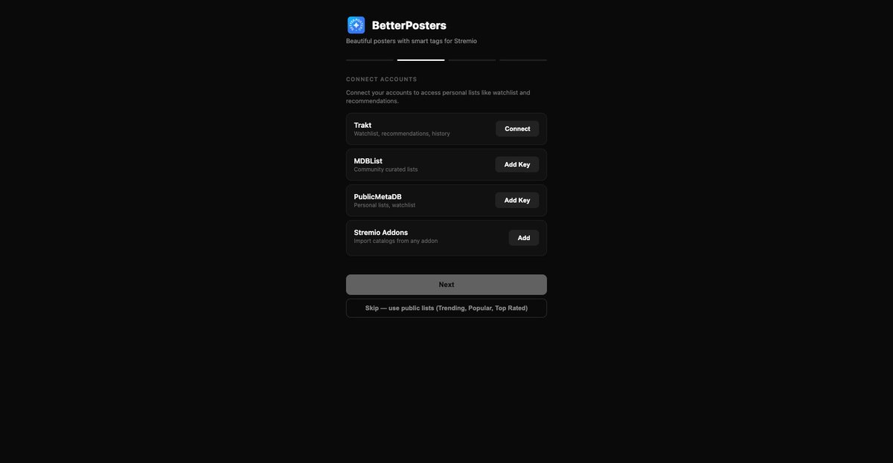
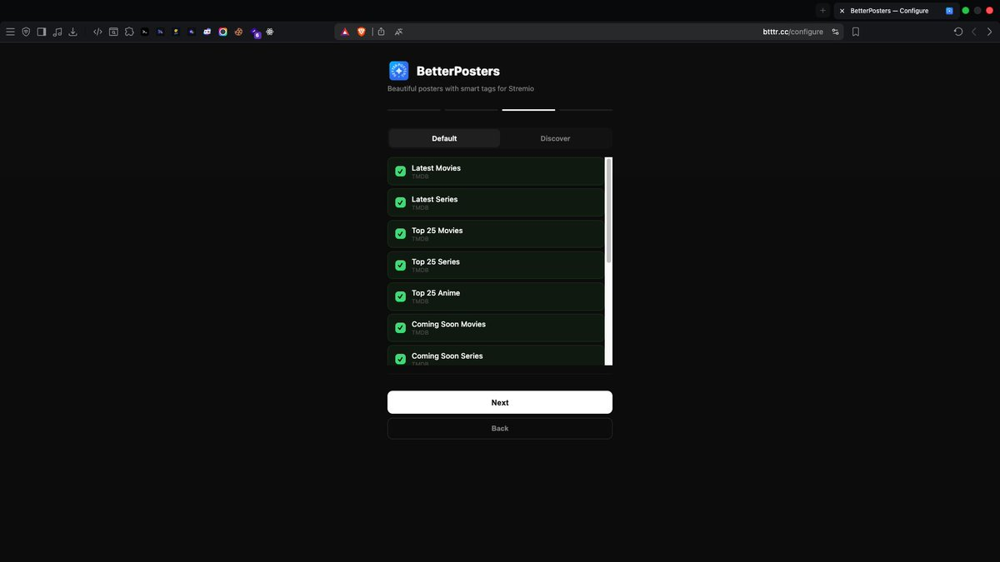
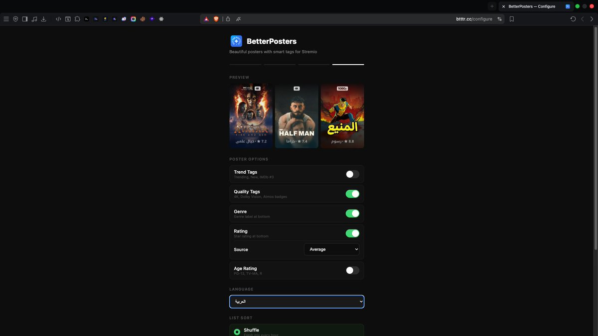
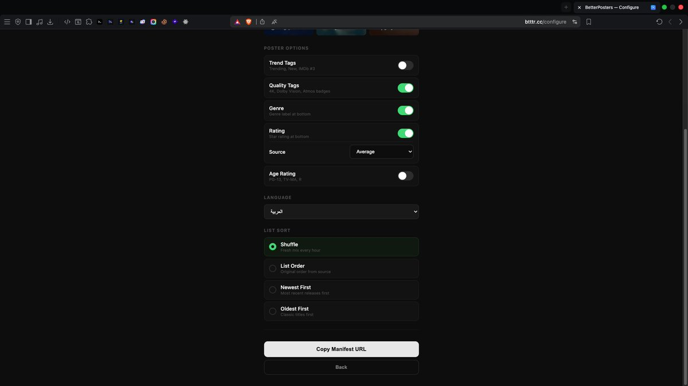
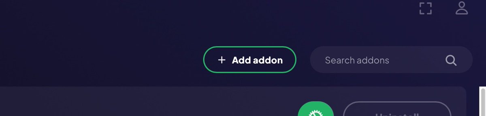
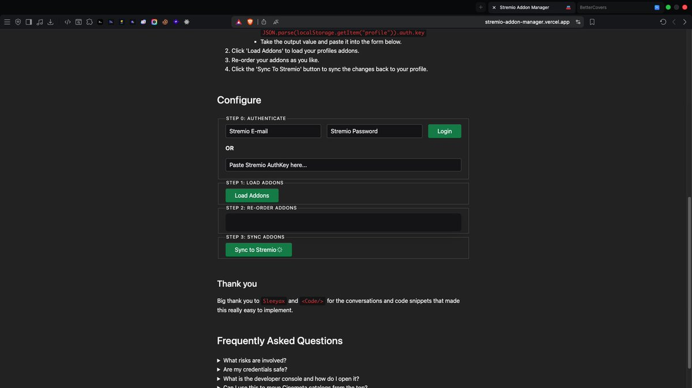
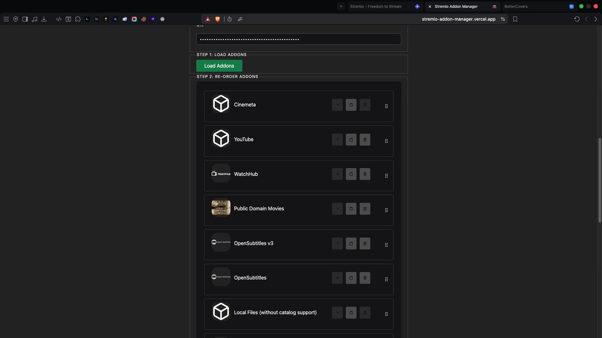
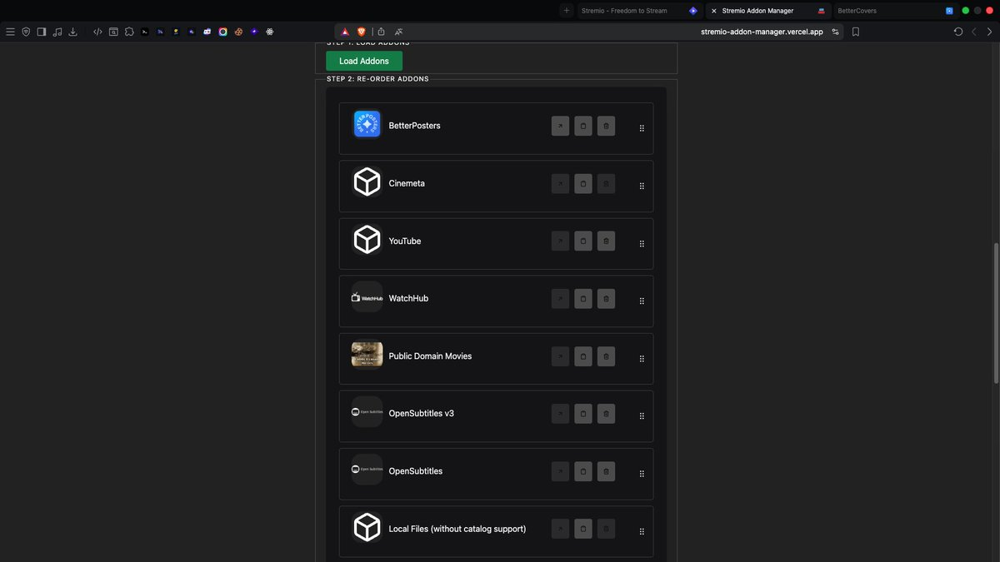
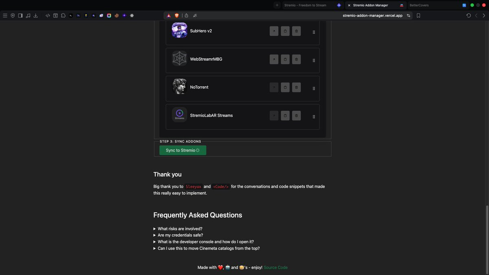
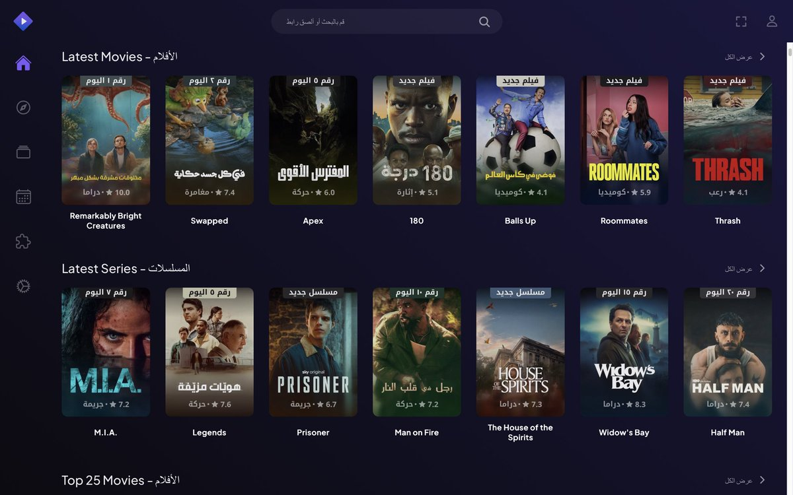

تحسين بوسترات Stremio عن طريق اضافة betterPoster 📺
ثريد بسيط يشرح لك كيف تحسن تجربة استخدام Stremio عن طريق تخصيص البوسترات بمعلومات مفيدة مثل التقييم واللغة.

1 | الربط مع المنصات الخارجية
في البداية، ستظهر لك هذه الواجهة إذا كنت ترغب في ربط الإضافة مع منصات خارجية مثل Trakt أو MDBList لمزامنة قوائمك الخاصة.
يمكنك الضغط على Skip إذا لم تكن ترغب في الربط حالياً.

2 | اختيار الكتالوجات (Catalogs)
في هذه الخطوة، ستظهر لك الكتالوجات الافتراضية. إذا كنت ترغب في إضافة المزيد، يمكنك التصفح في قسم Discover لرؤية قوائم جديدة وإضافتها لمكتبتك.
بعد اختيار القوائم التي تحتاجها، اضغط على Next للخطوة التالية.

3 | تخصيص شكل البوستر
هذه هي الخطوة الأخيرة والأهم، حيث يمكنك تخصيص شكل البوستر (اللغة، التقييم، وغيرها). أي خيار تفعله سيظهر لك مثال مباشر في الأعلى لشكل البوستر النهائي.
بعد الانتهاء من التخصيص، انزل للأسفل واضغط على Copy Manifest URL.


4 | إضافة الإضافة لستريميو
بعد نسخ الرابط، توجه إلى تطبيق Stremio، ثم اذهب إلى قسم Addons، واختر Add Addon، ثم قم بلصق الرابط الذي نسخته وأضف الإضافة.

5 | ترتيب الإضافات
لكي تظهر البوسترات المحسنة في الصفحة الرئيسية، يجب أن تكون إضافة betterPoster هي الأولى في الترتيب. يمكنك ترتيب إضافاتك بسهولة عبر موقع Stremio Addons Manager.
قم بتسجيل الدخول بحساب ستريميو الخاص بك، ثم اضغط على Load Addons. ابحث عن betterPoster وارفعها للأعلى كما هو موضح بالصور.



6 | المزامنة والحفظ
بعد رفع الإضافة للأعلى، انزل للأسفل واضغط على Sync to Stremio. الآن أغلق التطبيق وأعد تشغيله وستلاحظ الفرق في شكل البوسترات!
رابط إضافة BetterPoster موقع Stremio Addons Manager
